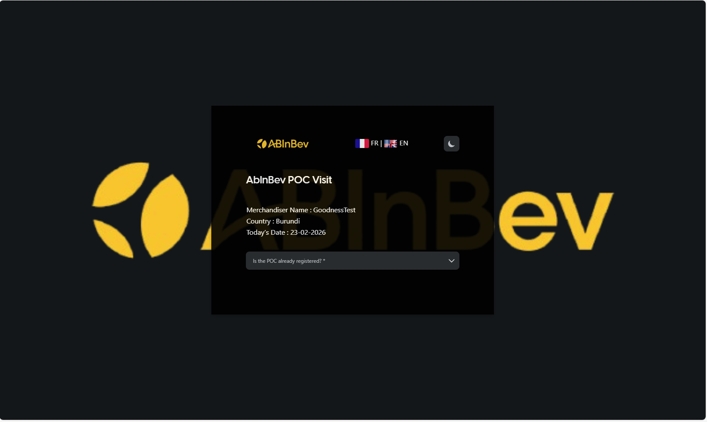
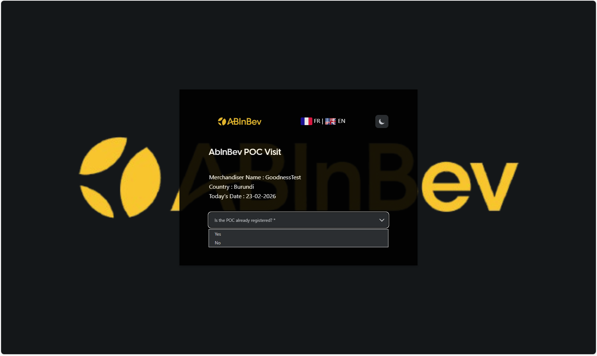
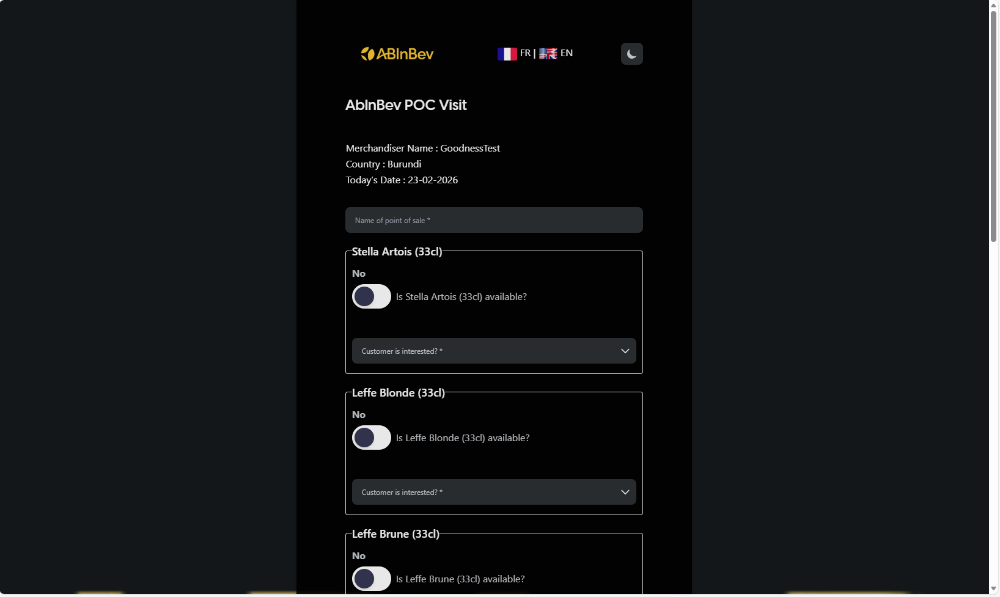
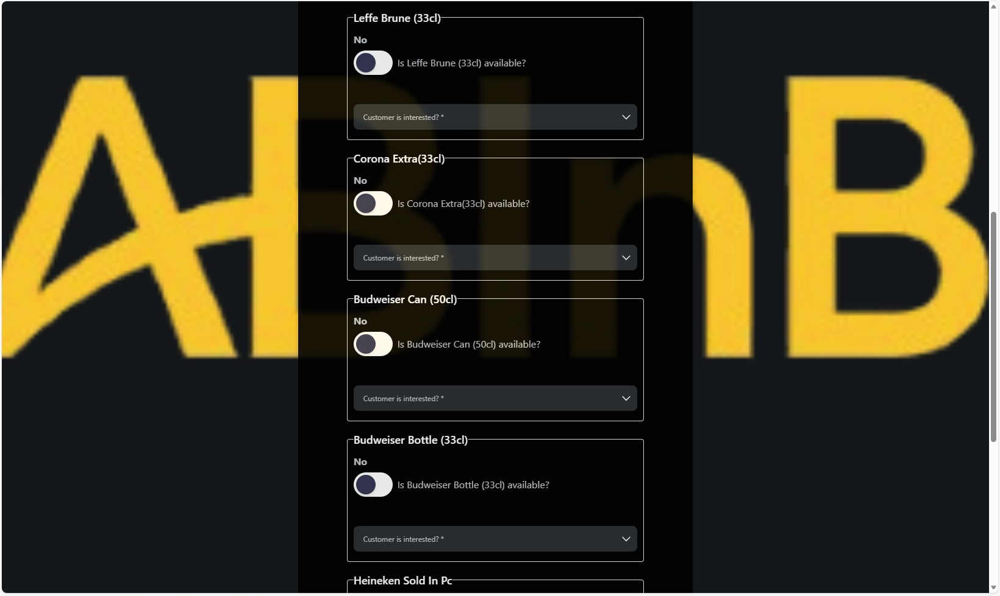
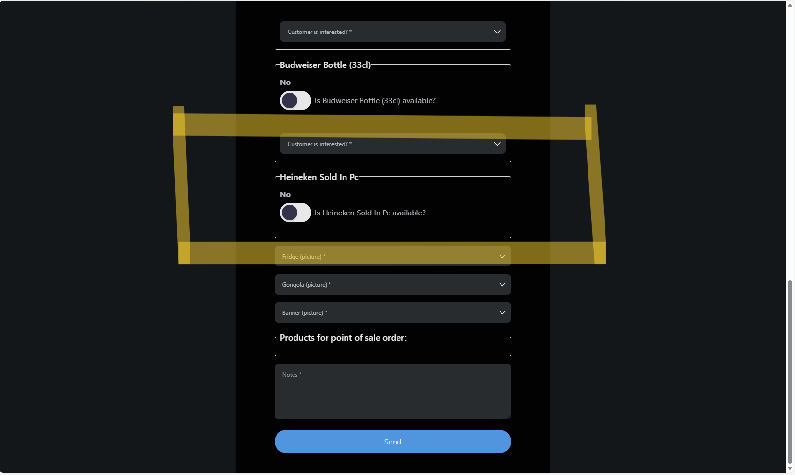
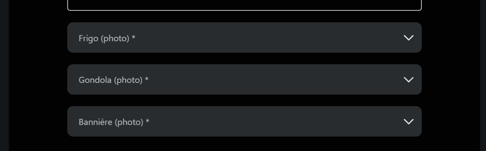
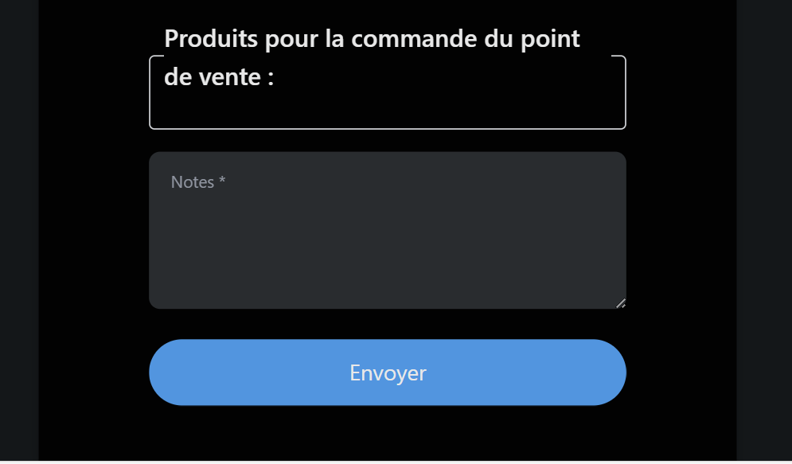
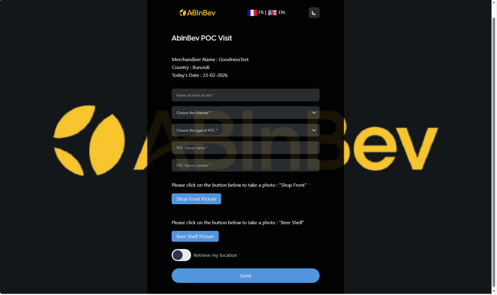

Conducting a POC Visit
Once you have your personalized link, you can start conducting Point of Sale (POC) visits. The visit form adapts based on whether the POC is already registered and the country you are in.
Accessing the Visit Form
Open the link you received during enrollment. You will see the AbInBev POC Visit form with your name and country pre-filled.

The form includes:
Merchandiser Name (auto-filled)
Country (auto-filled)
Today’s Date (auto-filled)
Is the POC already registered? (Required)
Two Scenarios

Depending on your answer to the registration question, the form will display different fields.
### If the POC is already registered
Select Yes. You will be redirected to a form, where you can select the existing POC from a dropdown. After selecting, you proceed to the visit details.
Visit Form Details
The visit form displays a list of products relevant to your country.

For each product, you need to answer:
Is [product] available? (dropdown, likely Yes/No)
Customer is interested? (required, probably Yes/No)

The product list may vary by country. Examples include:
Stella Artois (33cl)
Leffe Blonde (33cl)
Leffe Brune (33cl)
Corona Extra (33cl)
Budweiser Can (50cl)
Budweiser Bottle (33cl)
You may also say if a competitor product is available. For example:

Heineken Sold In Pc
Additionally, you may be required to take pictures of:
Fridge
Gongola (promotional material)
Banner

Finally, you can add Notes and then click Send to submit the visit.

After submission, the visit data is recorded and can be viewed in the dashboard.
### If the POC is not registered
Select No. You will be prompted to create a new POC by filling the following fields:
Name of point of sale (required)
Choose the channel (dropdown: e.g., On Trade, Off Trade)
Choose the type of POC (dropdown: e.g., tavern, restaurant, modern_trade)
POC Owner name (required)
POC Owner contact (required)
Shop Front Picture (click button to take a photo)
Beer Shelf Picture (click button to take a photo)
Retrieve my location (button to capture geolocation)

After creating the POC, you will be directed to the visit form like shown before.